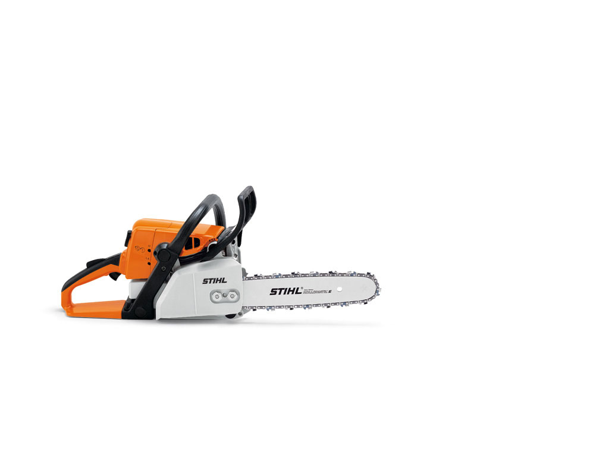

Robusna i snažna motorna testera sa veoma dobrim odnosom snage i težine, sa STIHL anti-vibracionim sistemom i zatvaračem rezervoara bez alata. Idealna za sečenje ogreva i izgradnje sa drvetom. Odlična za obaranje manjih stabala.
STIHL dugotrajni sistem filtriranja vazduha sa predfiltriranjem omogućava znatno duži vek trajanja filtera za vazduh u poređenju sa konvencionalnim sistemima. Uvučeni vazduh se kovitlajući oslobađa većih i težih čestica i tako predfiltriran usmerava na filter vazduha preko pred-separator kanala.
Ovaj kontroler održava odnos gorivo/vazduh u smeši za sagorevanje konstantnim a otuda i snagu motora. Tačna količina goriva je dostavljena u karburator u zavisnosti od kolicine vazduha koji prolazi kroz filter za vazduh. Filter ne treba čistiti dok se ne pojavi znatan pad u snazi motora.
Intenzivne vibracije na ručkama mogu dovesti do dugoročnih posledica na krvne sudove u šakama i rukama. STIHL je stoga razvio delotvoran anti-vibracioni sistem gde egzaktno proračunate odbojne zone smanjuju prenos oscilacija motora i lanca testere na cevi držaca i ručke.
STIHL Ematic sistem umanjuje potrošnju ulja za podmazivanje lanca i do 50% u poređenju sa konvencionalnim vodilicama bez Ematic sistema, u zavisnosti od kompleta za sečenje i vrste materijala koji se seče. Sistem se sastoji od STIHL Ematic ili Ematic S vodilice, STIHL Oilomatic lanca testere i pumpe za ulje sa regulatorom potrošnje tj. smanjenom potrošnjom ulja. Ulje za podmazivanje lanca ciljano se usmerava tamo gde je potrebno i uz najmanju potrošnju.
Posebno posvećena pažnja na zatvarače rezervoara goriva i ulja za lako otvaranje i zaključavanje bez potrebe za alatom.
Pogledajte motornu testeru STIHL MS 260